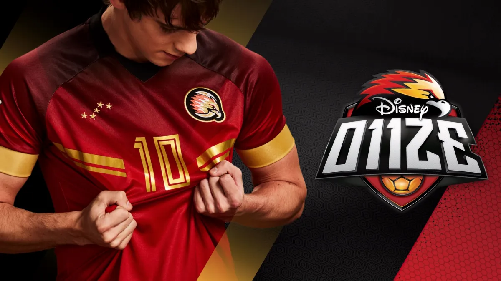

Outer Banks
Outer Banks é uma série de aventura e mistério que acompanha um grupo de amigos em busca de um tesouro lendário. Enquanto enfrentam perigos, segredos e conflitos entre ricos e pobres, eles descobrem que a amizade e a lealdade são tão importantes quanto a própria caça ao tesouro.

O11ZE
O11ZE é uma série de drama e esporte que acompanha Gabo, um jovem talentoso que sonha em se tornar jogador de futebol. Ao entrar para uma academia de alto rendimento, ele enfrenta desafios, faz novas amizades e aprende importantes lições sobre trabalho em equipe, superação e dedicação.